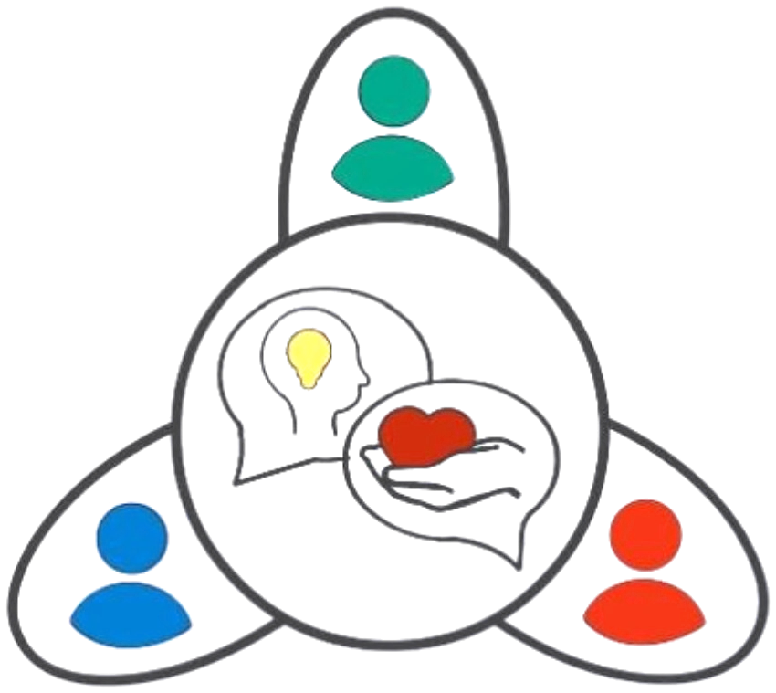

Pädagogische Fachkräfte und Teams
Klärung im Team, Begleitung bei Konflikten und Impulse für den pädagogischen Alltag.
- Mediation
- Workshops
- Fortbildungen
Christina Grundner · München
Für pädagogische Fachkräfte und Teams, für Kinder und Familien und für Eltern: Konflikte klären, Haltung finden, gemeinsam Lösungen entwickeln.

Für wen möchtest du Unterstützung?
Klärung im Team, Begleitung bei Konflikten und Impulse für den pädagogischen Alltag.
Raum für Ruhe und Bewegung und Unterstützung, wenn es in der Familie schwierig wird.
Beratung im Erziehungsalltag, mit Blick auf Bedürfnisse, Grenzen und Beziehung.
Privat und beruflich
Wege aus der Eskalationsfalle: Konflikte fair lösen, für ein friedvolles Miteinander.
Als neutrale Dritte begleite ich Konfliktparteien in einem strukturierten Verfahren nach dem Mediationsgesetz, auch festgefahrene Teams. Ihr erarbeitet selbst eine Lösung, mit der alle Beteiligten leben können.
Für Kita-Teams
Ein video-basiertes Beobachtungs- und Reflexionstraining. Fachkräfte filmen kurze Alltagssequenzen mit Kindern, wir analysieren sie gemeinsam und leiten konkrete Impulse für die tägliche Arbeit ab. Abschluss mit Zertifikat von Marte Meo International.
Für Eltern und Fachkräfte
Anhand kurzer Videoaufnahmen aus dem Familien- oder Kita-Alltag zeige ich, wie ihr die Entwicklung eurer Kinder im alltäglichen Miteinander gezielt unterstützt.
Für Kinder mit ihren Eltern
Altersgerechte Yoga-, Bewegungs- und Entspannungsübungen, die Kinder gemeinsam mit ihren Eltern erleben.
Für pädagogische Einrichtungen
Ein Tag für das ganze Team: Zusammenarbeit stärken, Haltung klären und neue Impulse für den Kita-Alltag mitnehmen.
Montessori-Verleih
Als Montessori-Pädagogin und zweifache Mama schlägt mein Herz für nachhaltige Bildung und die individuelle Entwicklung jedes einzelnen Kindes. Ich bin überzeugt: Jedes Kind verdient Zugang zu hochwertigem Lern- und Naturmaterial, passgenau zur aktuellen Entwicklungsphase und ohne finanzielle oder räumliche Hürden.
Natur- und Holzmaterialien, abgestimmt auf die sensiblen Phasen und aktuellen Interessen deines Kindes.
Ausleihdauer für 1 oder 3 Monate, genau so lange, wie das Material spannend ist.
Kein verstaubtes Spielzeug im Schrank. Wir teilen Ressourcen, schonen die Umwelt und halten das Kinderzimmer übersichtlich.
Hochwertige Montessori-Pädagogik, bezahlbar und zugänglich für alle Familien, Kindertagesstätten und pädagogischen Einrichtungen.
Erzähl mir kurz, wie alt dein Kind ist und was es gerade beschäftigt.
Gemeinsam suchen wir Material aus, das zur aktuellen Entwicklungsphase passt.
Du nimmst das Material für 1 oder 3 Monate mit nach Hause oder in deine Einrichtung.
Ist das Interesse gestillt, bringst du es zurück und dein Kind entdeckt etwas Neues.
Zum Ausprobieren, oder wenn dein Kind gerade sehr schnell Neues braucht.
Preis: auf Anfrage
Für Material, mit dem dein Kind länger und in der Tiefe arbeiten möchte.
Preis: auf Anfrage
Die klassischen Bereiche der Montessori-Pädagogik, mit Natur- und Holzmaterial.
Schütten, Löffeln, Fädeln und Alltagshandgriffe für Selbstständigkeit und Feinmotorik.
Farben, Formen, Größen, Geräusche und Oberflächen bewusst unterscheiden.
Wortschatz, Laute und erste Buchstaben spielerisch begreifen.
Mengen und Zahlen mit den Händen erfassen, lange bevor gerechnet wird.
Tiere, Pflanzen, Jahreszeiten und Länder entdecken, mit echtem Naturmaterial.
Welches Material gerade verfügbar ist, zeige ich auf Instagram: @life_.in._harmony
Gönne deinem Kind das passende Material zur rechten Zeit, nachhaltig, einfach und voller Freude am Selbermachen.
Herzlich willkommen. Ob du Unterstützung in der Familie suchst, dein Kind spielerisch begleiten möchtest oder als Team nach Klarheit strebst: Hier findest du einen geschützten Raum für Bewegung, Beratung und wertschätzenden Austausch.
Ich bin Christina, Erzieherin und Montessori-Pädagogin, Mama von zwei Kindern und lebe mit meiner Familie in München. In meiner Arbeit verbinde ich Montessori-Pädagogik, Marte Meo®, Yoga und Mediation zu einem Ziel: Kinder in ihrer eigenen Entwicklung zu stärken und die Erwachsenen um sie herum gut zu begleiten.
Mein Herz schlägt für das Miteinander. In meiner Arbeit habe ich gelernt: In jedem Menschen liegt bereits alles, was er für seinen Weg braucht. Ich sehe nicht das Defizit, sondern die Stärke, und mache diese Ressourcen für Kinder, Eltern und Fachkräfte sichtbar und nutzbar.
Als Mutter, Pädagogin und Trainerin kenne ich die Herausforderungen aller Rollen aus eigener Erfahrung. Ich weiß, welches Wunder entsteht, wenn wir die Verbindung zueinander stärken. Mein Herzensanliegen ist es, Harmonie in Familien und Teams zu fördern und das möglichst vielen Menschen zugänglich zu machen.
Den Montessori-Verleih habe ich gegründet, weil gutes Material teuer ist, Platz braucht und oft nur wenige Monate spannend bleibt. Geteilt kommt es bei viel mehr Kindern an.
Ich unterstütze dich dabei, den „inneren Bauplan“ deines Kindes zu verstehen und eine Umgebung zu schaffen, in der es sich natürlich entfalten kann.
Ich nutze die „Goldmine“ der alltäglichen Interaktion: Wir schauen genau hin, was bereits gelingt, um daraus gezielt Entwicklungsimpulse für eine gelungene Kommunikation zu setzen.
In meinen Yoga-Angeboten, vom Kleinkind- über Kinder- bis zum Familienyoga, und in meinen Spielgruppen schaffe ich Räume für Bewegung und achtsame Begegnung. Hier dürfen Kinder und Eltern gemeinsam zur Ruhe kommen, sich spüren und mit Freude wachsen.
Diese Haltung bringe ich auch in Teams und Gruppen. Ich begleite euch mit fachlicher Tiefe, menschlicher Wärme und dem festen Glauben an euer Potenzial.
Wir sehen das Potenzial, nicht das Defizit.
Montessori & Marte Meo®Achtsamkeit für sich selbst und das Umfeld.
Yoga & KommunikationKonflikte lösen, statt sie zu verwalten.
Mediation & TrainingLass uns gemeinsam den Raum schaffen, in dem du und deine Kinder frei, sicher und gestärkt wachsen könnt.
Schreib mir gern eine E-Mail oder eine Nachricht auf Instagram. Ich melde mich bei dir.